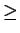
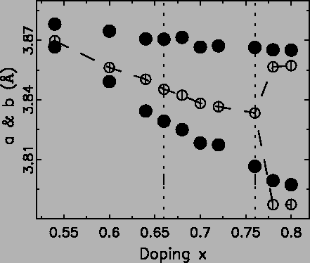
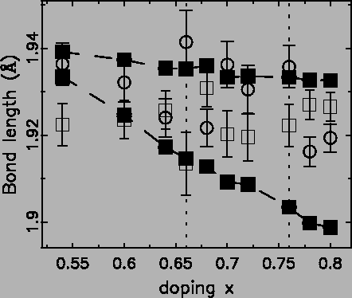
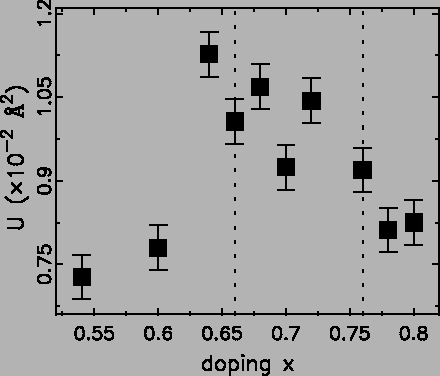

Structural modeling gives a more quantitative picture of the local
structure than the qualitative analysis described above. Two
structural models were fit based on the tetragonal and orthorhombic
crystallographic models [150]. It is worth noting here
that any constraint by the space group and symmetry during average
structure analysis can be relaxed in our real space full profile
modeling. Additionally, we can add any kind of constraints based on
physical reasons. It was found that the best agreement was found for
doping
x 
0.60 when the tetragonal symmetry is relaxed to
orthorhombic. In the case of x = 0.60 the improvement in fit of the
orthorhombic model is barely significant and in this case we cannot
unambiguously assign the local symmetry as orthorhombic. In the
following, only results from the relaxed orthorhombic symmetry are
reported.
The two in-plane lattice constants a and b are shown in
Fig. 4.15 together with the lattice constants obtained from
Rietveld refinement using GSAS [68]. The two dashed
vertical lines show the phase transition from type-A AFI to spin
disordered and tetragonal to orthorhombic (which is almost coincident
with the magnetic transition from spin disordered to type C/C*
AFI), respectively.
Figure:
Solid circles are the in-plane lattice constants a and b
from PDF refinements with orthorhombic models, while open circles
are from Rietveld refinements on the same data with tetragonal and
orthorhombic models in
0.54  x 0.76 and
0.78 x 0.80, respectively. Vertical dotted lines indicate positions
of magnetic phase transitions from type-A to spin disordered to
type C/C*.
x 0.76 and
0.78 x 0.80, respectively. Vertical dotted lines indicate positions
of magnetic phase transitions from type-A to spin disordered to
type C/C*.
|

|
The PDF refinements suggest the structure is already locally
orthorhombic as early as x = 0.60, while the sharp crystallographic
phase transition occurs around x = 0.76. This could be explained if
JT distorted MnO6 octahedra are beginning to appear on Mn3+
sites around x = 0.60, but the long bonds lie along the a and b
axes randomly.
It is important to determine whether the JT long-bonds that appear at
x 0.60 lie in the plane, perpendicular to the plane, or are
distributed between these possibilities. This can be studied by
looking at the refined values of the Mn-O bond lengths. The four
different Mn-O bond lengths within one MnO6 octahedron, determined
by PDFFIT, are shown in Fig. 4.16.
0.60 lie in the plane, perpendicular to the plane, or are
distributed between these possibilities. This can be studied by
looking at the refined values of the Mn-O bond lengths. The four
different Mn-O bond lengths within one MnO6 octahedron, determined
by PDFFIT, are shown in Fig. 4.16.
Figure:
Solid squares are the two in-plane (ab) Mn-O bond lengths. The
bond length between Mn and the out of plane O atom is shown as open
squares, while the bond length between Mn and the intra plane O
atoms is shown as open circle. Vertical dotted lines indicate
positions of magnetic phase transitions from type-A to spin
disordered to type C/C*.
|

|
What is clear from this Figure is that over this doping range there is
no clear trend in the apical (perpendicular) bonds. This implies that
the observed increase in the Mn-O bond-length distribution with doping
is coming primarily from the in-plane bonds. The JT distorted Mn3+ ions that appear with doping are predominantly locating their
long-bonds in the plane. The electronic states along c remain
largely unchanged with doping, and little or no charge transfer occurs
between in-plane and out of plane.
We have observed evidence for JT long bonds lying in the plane from
the PDF refinements. If this picture is correct we would expect to
see a response in the refined in-plane Mn and O displacement
factors. These should be small for x < 0.60 because there is little
disorder in the structure and the models that we are using, based on
the average structure, should work well also for the local
structure. We might expect them also to be small and largely thermal
in origin for x > 0.76 where the JT distorted orbitals are ordered
along the b axis. In the spin disordered region we see evidence in
the local structure for significant numbers of JT distorted Mn3+ ions that are not fully ordered. By allowing the local structure to be
orthorhombic much of this disorder will not show up in PDF derived
displacement factors. However, it is interesting to note that there
is a peak in the value of the planar Mn-O displacement parameters in
this region, as shown in Fig. 4.17.
Figure 4.17:
Thermal displacement factor of the
in-plane O atoms along the direction of Mn-O bonds. Vertical
dotted lines indicate positions of magnetic phase transitions from
type-A to spin disordered to type C/C*.
|

|
Xiangyun Qiu
2005-02-18